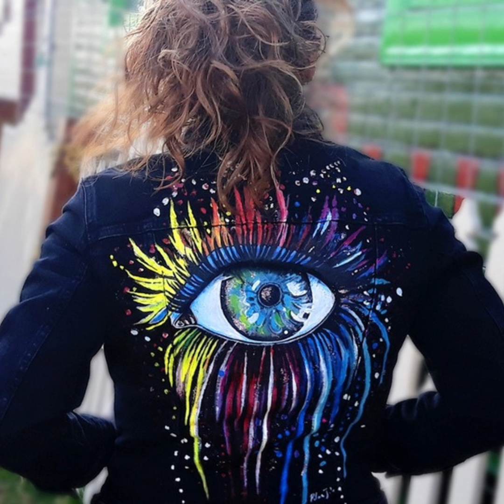

Acerca de Artics NFT
Artics NFT es una tienda de ropa innovadora que combina el mundo de la moda con el de los NFT. Ofrecemos prendas únicas con NFT incorporados que garantizan la autenticidad y la exclusividad de cada pieza. Nuestro proceso de compra es fácil y seguro, simplemente elige la prenda que más te guste y adquiere su correspondiente NFT. Además, el NFT te da acceso a contenido exclusivo y eventos especiales relacionados con la marca. ¡Únete a la revolución de la moda con Artics NFT!
Antecedentes
Artics nace del sueño de ser una de las primeras tiendas físicas/digitales blockchain de NFTs en México que ofrece la posibilidad de comprar prendas de ropa a través de un NTF, dicha prenda está customizada con el diseño del NFT comprado.
"Artics NFT, el lujo de la exclusividad en cada prenda"
NUESTRA UBICACIÓN
Nuestro establecimiento esta ubicado en Oasis Coyoacan
GALLERY
- Chamarras
- Playeras
- Tennis
- Carteras
- Fundas